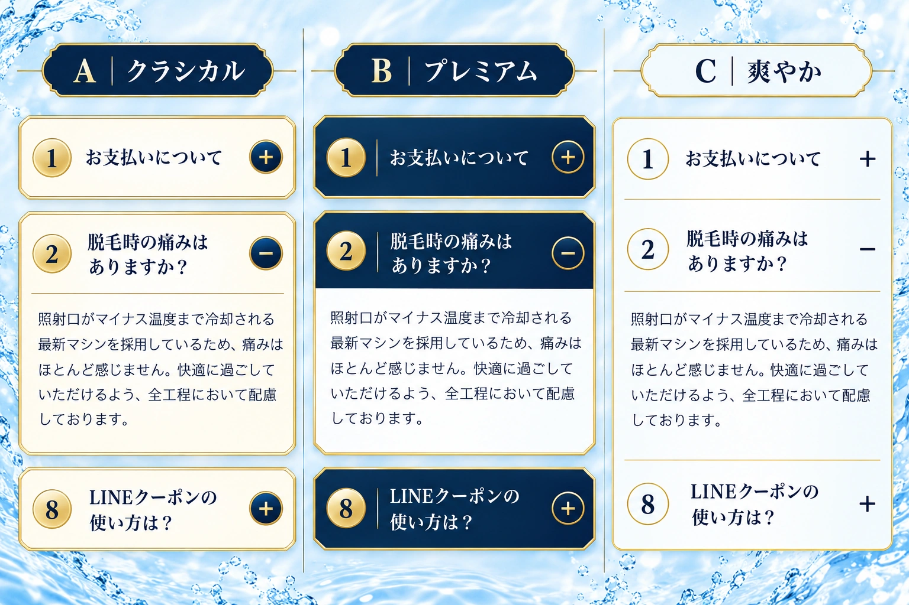

A｜クラシカルおすすめ
アイボリーのカードと繊細な金の縁。質問ごとのまとまりが分かりやすく、既存LPの上品な紺・金にも自然につながります。
画像をタップして3案の原寸比較を開く
Salon de Six · バンコク男磨きセット
現在の紺・金のトーンに合わせて、枠の形・番号・開閉ボタンの見せ方を比較できます。質問と回答は既存の内容を使用しています。
採用前の比較案です。現在のLPのFAQには反映していません。採用後は外側を透明にし、LPの固定された水しぶき背景の上に実装します。1〜8の数字はすべて円の中央に統一します。
アイボリーのカードと繊細な金の縁。質問ごとのまとまりが分かりやすく、既存LPの上品な紺・金にも自然につながります。
画像をタップして3案の原寸比較を開く
深い紺と金の隅切りで、質問をはっきり見せる案。開くと白い回答面につながり、質問と回答の違いが明確です。
画像をタップして3案の原寸比較を開く一つの明るい面を細い金の線で区切る案。番号は輪郭だけの丸に収め、枠の主張を抑えて軽やかに読める構成です。
画像をタップして3案の原寸比較を開く